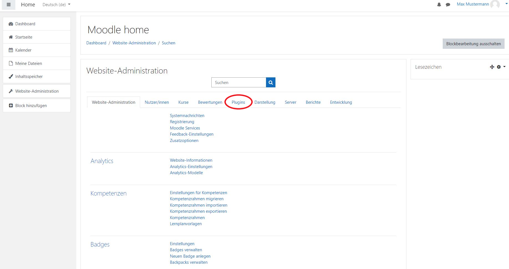
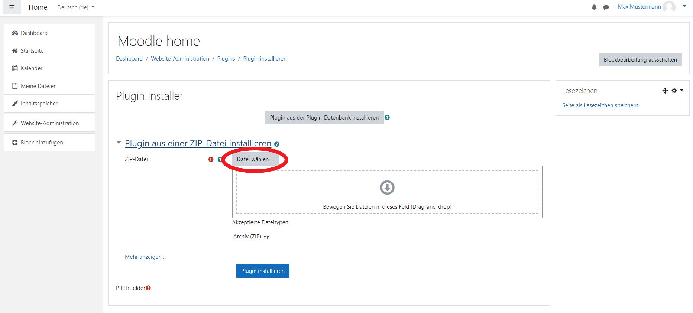
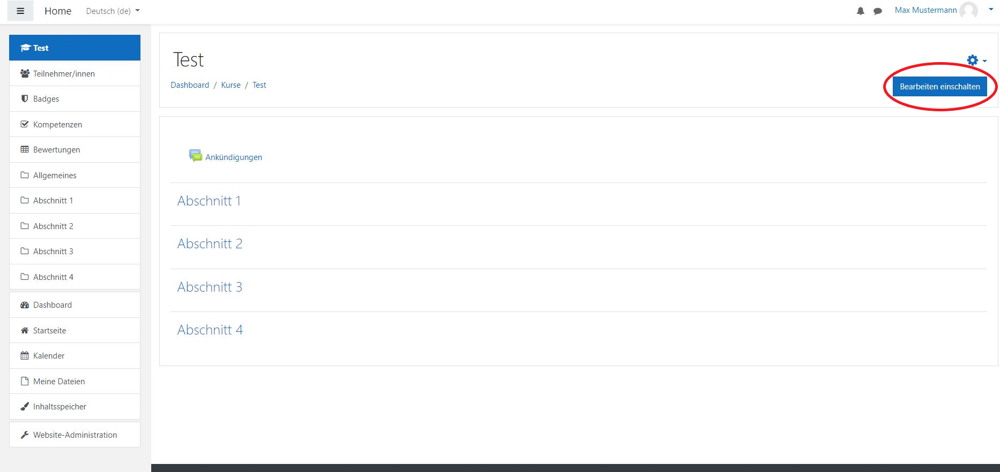
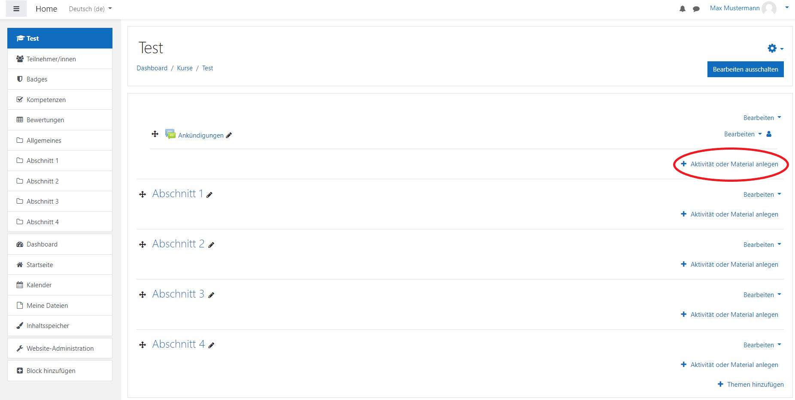
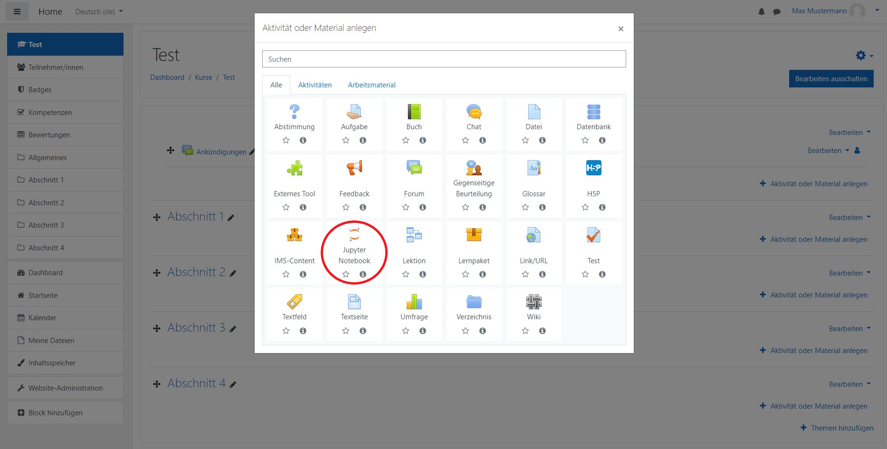
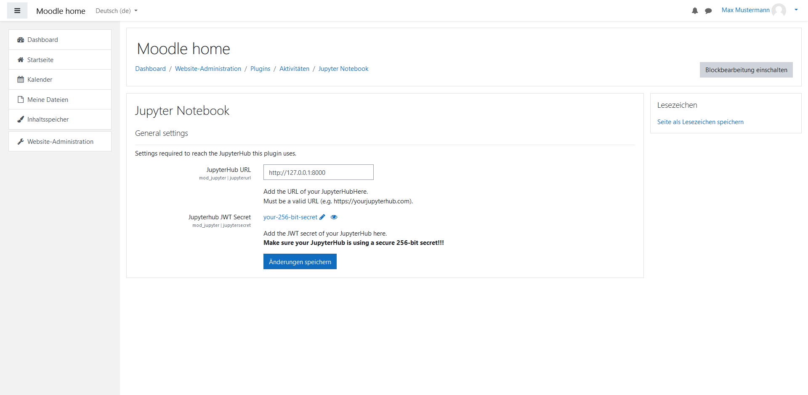
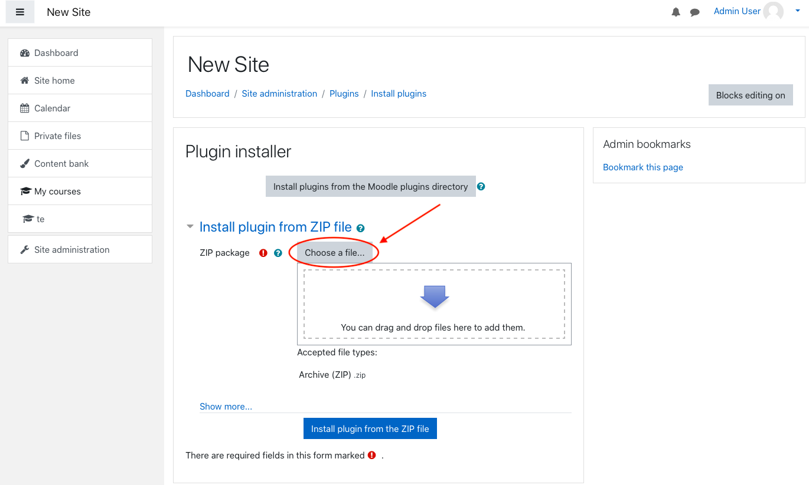
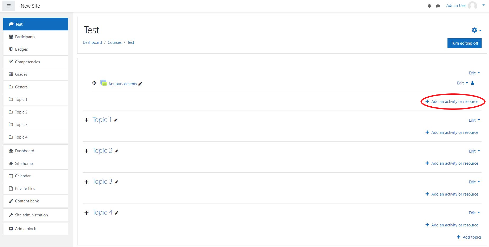

Lehrer Dokumentation
Deutsch
Dieses Dokument soll als Anleitung für Lehrkräfte dienen, die das
Jupyter Notebook Plugin in ihrem Moodle Kurs einrichten wollen.
Es wird dargestellt wie das Plugin installiert und deinstalliert werden kann.
Außerdem wird erklärt wie Lehrende ein Jupter Notebook einem Kurs hinzufügen können sowie spezifische Einstellungen vornehmen können.
Voraussetzungen
Um dieses Plugin nutzen zu können ist eine laufende Instanz von JupyterHub erforderlich.
Diese sollte zuvor von Ihrem IT-Administrator eingerichtet worden sein.
Weitere Informationen dazu finden Sie in der IT-Administrator-Dokumentation.
Außerdem benötigen Sie einen Admin Moodle Account.
Installation des Plugins
- Erstelle eine Zip-Datei vom Verzeichnis jupyter.
Die Zip-Datei sollte ebenfalls “jupyter” genannt werden. 
- Öffnen Sie Moodle und melden Sie sich mit einem Administrator Profil an um weitere Einstellungen im Verlauf dieser Anleitung vorzunehmen.
- Klicken Sie auf Website-Administration.

- Klicken Sie auf Plugins. 
- Klicken Sie auf Plugin installieren.
- Fügen Sie die “jupyter.zip” datei via “Datei auswählen…” oder “drag and drop” hinzu. 
- Klicken Sie auf den Plugin installieren Button.
- Klicken Sie auf Weiter.
- Als nächstes erscheint eine Seite über aktuelle Veröffentlichungsinformationen. Scrollen Sie herunter und klicken Sie wieder auf Weiter.
- Nun wird das zu installierende Plugin dargestellt. Um fortzufahren klicken Sie auf Aktualisierung der Datenbank
starten.
- Es sollte eine Erfolgsmeldung über die Installation des Plugins angezeigt werden. Drücken Sie auf Weiter .
- URL/IP settings werden angezeigt. Wenn das JupyterHub setup erfolgreich ausgeführt wurde, werden die vordefinierten Einstellungen bereits korrekt sein und Sie können fortfahren.
Falls ihr IT-Administrator Änderungen vorgenommen hat bezüglich
einer anderen URL, können Sie hier eine neue URL bzw IP und port angeben für den JupyterHub Server.
- Klicken Sie auf Änderungen speichern um die Installation des Plugins abzuschließen.
Einbindung des Plugins in einen Kurs
- Navigieren Sie zur Startseite.
- Wählen Sie den Kurs aus, indem sie das Plugin verwenden möchten.
- Aktivieren Sie die Bearbeitung mit Bearbeiten
einschalten oben rechts. 
- Klicken Sie auf “Aktivität oder Material anlegen” und wählen Sie das Jupyter Notebook Plugin.  
- Geben Sie einen Namen für ihre Jupyter Instanz an.
Um ihre Jupyter Notebook Dateien an die im Kurs eingeschriebenen Studierenden zu verteilen, müssen Sie sie zunächst in einem Git-Repository hochladen (z. B. GitLab oder GitHub).
Nun müssen Sie die URL des Repositorys und den zu verwendenden branch angeben (der Standardbranch heißt main oder
master) sowie die Datei angeben, die geöffnet werden soll.
- Falls erwünscht, können Moodle spezifische Einstellungen auf dieser Seite vorgenommen werden.
- Nun kann gespeichert und angezeigt werden.
Plugin Einstellungen
- Navigieren Sie zu Website-Administration.
- Öffnen Sie Plugins.
- Klicken Sie auf Übersicht unter
Aktivitäten.
- Suchen Sie nach Jupyter Notebook und klicken sie auf Einstellungen. 
Deinstallieren des Plugins
- Navigieren Sie zu Website-Administration.
- Öffnen Sie Plugins.
- Klicken Sie auf Übersicht unter
Aktivitäten.
- Suchen Sie nach Jupyter Notebook und klicken sie auf Deinstallieren.
Teacher Documentation
English
This document is intended as a guide for teachers who want to set up the JupyterNotebook plugin in their Moodle course. It shows how to install and uninstall the plugin. Furthermore it explains how instructors can add a JupyterNotebook to a course and how to set specific preferences.
Prerequisites
To make use of this plugin a running instance of JupyterHub is necessary.
This should have been set up by your IT-administrator beforehand.
For further information on that regard please refer to the IT-administrator documentation.
Also you need an admin Moodle account.
Install Plugin
- Get a zip version the directory jupyter.
The zip file has to be named “jupyter” as well. 
- Open and log in to Moodle. You have to log in with an adminstrator account to set the following preferences.
- Click on Site administration.

- Click on Plugins.

- Click on Install Plugins.
- Add the “jupyter.zip” file via “Choose a file…” or “drag and drop”.

- Click on “Install plugin from the ZIP file” button to install the plugin.
- Click on Continue.
- A page about current release information will appear. Scroll down and click on Continue again.
- The next page displays the plugin you are about to install. To install the plugin, click on Upgrade Moodle datebase
now.
- The next page should confirm a successful installation. Click on
Continue to progress further.
- Now the URL/IP settings of the plugin show. If the provided JupyterHub setup is set up and used, the default values will already be correct.
However, if your IT-administrator made changes to the configuration of the URL/IP you can enter a new URL or IP and the port of the JupyterHub server.
- Click on Save changes to finish the installation of the plugin.
Add plugin to course
- Go to Site Home.
- Click on the course you want to use the plugin in.
- Turn editing on at the top right.

- Click on “Add an activity or resource” and add the
Jupyter Notebook plugin as an activity. 

- Put in a name for your Jupyter Instance.
To distribute Jupyter Notebook files to students enrolled in the course, you need to upload them to a remote git repository (i.e., GitLab or GitHub).
When including the plugin in a Moodle course, you need to provide the URL of the repository, the branch you want to use (the default branch is called main or master), and specify the file you want to be opened.
- Optionally, specify moodle specifig settings.
- Save and return to the course.
Plugin Settings
- Go to Site Administration.
- Open Plugins.
- Click on Manages Activities which can be found under Activity Modules.
- Find the Jupyter Plugin and click Settings.

Uninstall the Plugin
- Go to Site Administration.
- Open Plugins.
- Click on Manages Activities which can be found under Activity Modules.
- Find the Jupyter Plugin and click on
Uninstall.